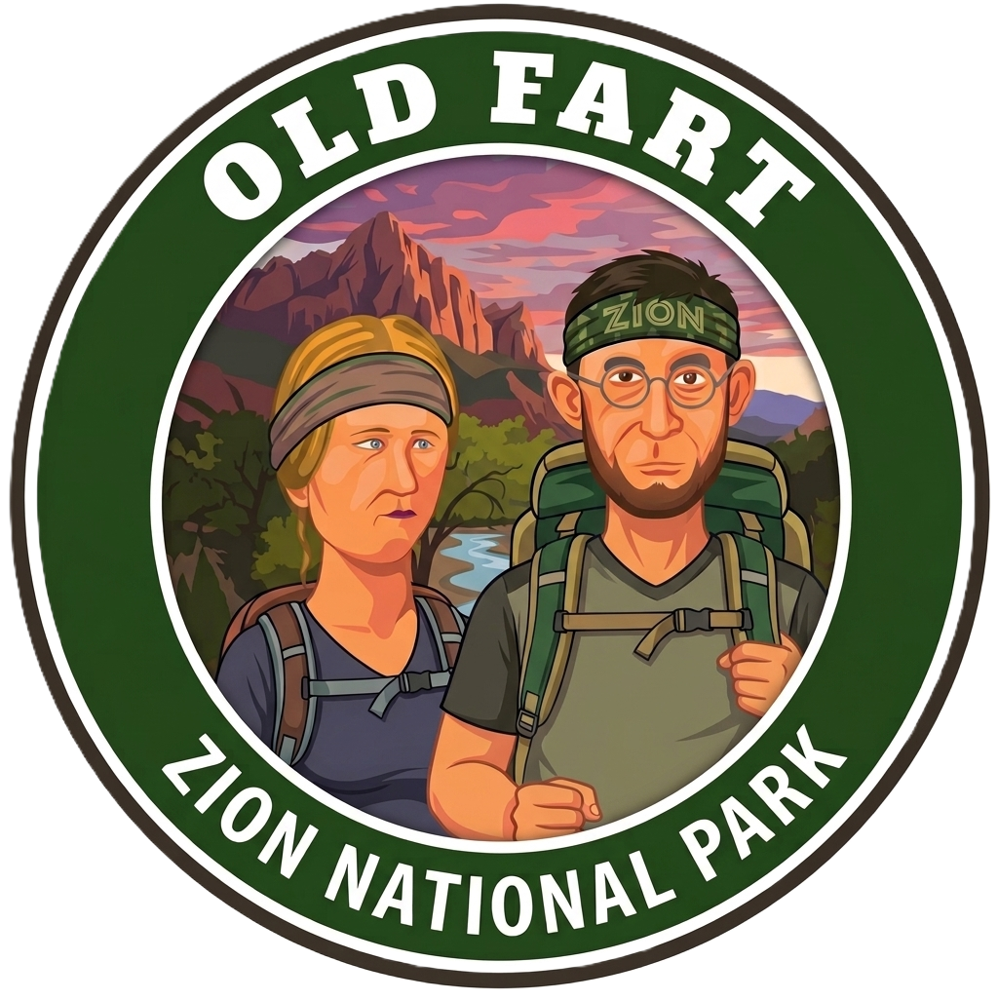
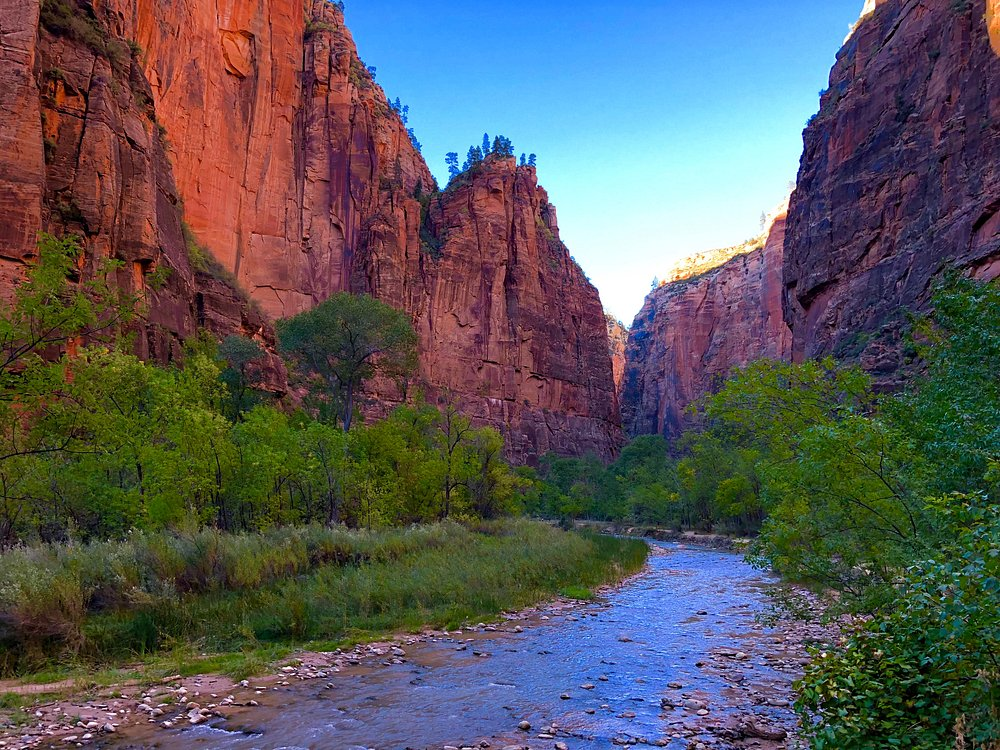
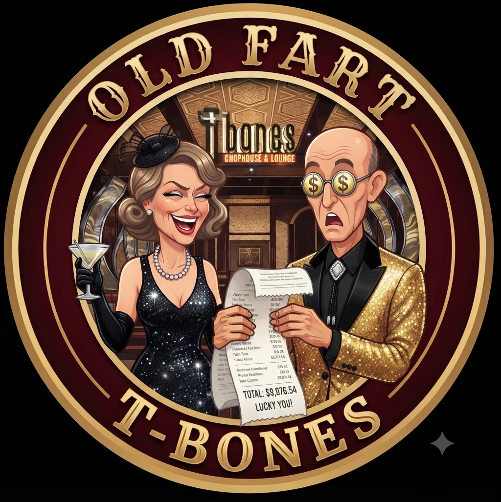
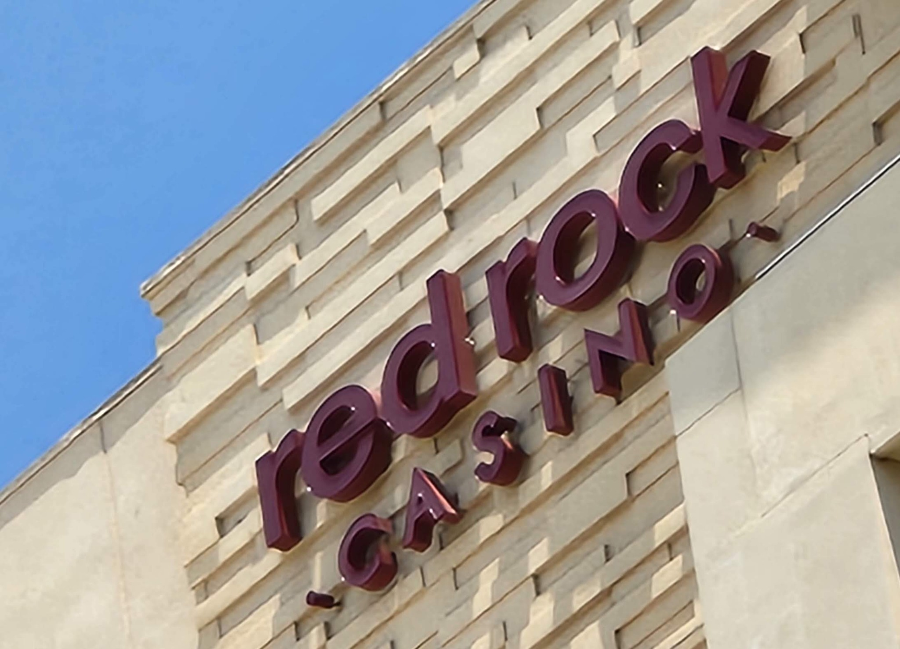
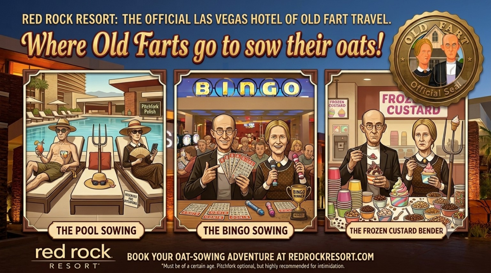

🥞 Breakfast
Hampton Inn Complimentary Breakfast
Eat well.
National park mornings are no place for restraint.

Zion National Park → Las Vegas • Sunday, August 9, 2026

Today combines one final taste of the Southwest's spectacular scenery with an evening of well-earned luxury.
We'll spend the morning exploring Zion National Park before trading towering sandstone cliffs for the bright lights of Las Vegas.
It's a day of wonderful contrasts—and one that ends with a birthday dinner at one of our favorite restaurants anywhere.
This is why.
Fuel up before heading into the park.
We'll transfer to Zion's park shuttle, which carries visitors deep into Zion Canyon without the hassle of driving or parking.
From there, we'll begin the Riverside Walk. This relatively flat, paved trail follows the Virgin River as towering sandstone walls gradually close in around you.
It's one of Zion's easiest and most rewarding walks, making it a perfect introduction to the park.
Afterward, we'll work our way back down the canyon, stopping wherever something catches our eye.
Zion doesn't need a complicated itinerary.
It just needs your attention.
Perhaps inside the park, perhaps back in Springdale.
We'll let appetite and timing make the call.
Approximate drive time: 3½ hours
Estimated arrival at Red Rock Resort: 5:30 p.m.
Time to unpack, freshen up, and prepare for a special evening.

Hampton Inn Complimentary Breakfast
Eat well.
National park mornings are no place for restraint.
Wherever Hunger Strikes
One advantage of Zion's shuttle system is that we're free to stop whenever something looks interesting.
🍴 Springdale Lunch Options
Two years ago, we introduced Joan and Bill to T-Bones.
Bill later admitted that he couldn't imagine spending that much money on dinner...
...until he experienced it.
The service.
The atmosphere.
The food.
The evening.
When it was over, one of the first questions he asked while planning this trip was:
“We're going back to T-Bones... right?”
Fortunately, this is Old Fart Travel.
John found a Costco package that included three nights at Red Rock Resort plus a $100 dining credit.
Luxury is wonderful. Luxury on sale is even better.
🥩 T-Bones MenuThree nights of resort living begin tonight.
After nine days on the road, Red Rock gives us exactly what we need:
Comfort.
Restaurants.
A beautiful pool.
A casino downstairs.
And absolutely no reason to load the minivan again until somebody feels like it.

🥞 Never skip a complimentary breakfast before a national park day.
🚌 Ride the shuttle all the way to the end first, then explore your way back.
💰 Spend where you'll remember it. Save where you won't.
Tonight is one of those nights worth remembering.
John's birthday itinerary somehow includes one of America's most beautiful national parks and a steakhouse where the server remembers him after a year.
That is setting the birthday bar unreasonably high for the rest of us.
Tomorrow is our reward for nine days of adventure.
No alarm clocks.
No long drives.
No timed tickets.
No reservations until dinner.
We'll sleep in, enjoy the Red Rock pool, and let the day unfold at its own pace.

Today perfectly captures what Old Fart Travel is all about.
This morning, we're surrounded by silence, red cliffs, and the Virgin River.
Tonight, we'll raise a glass in Las Vegas with good friends.
You don't have to choose between adventure and comfort.
Sometimes the best vacations include both.